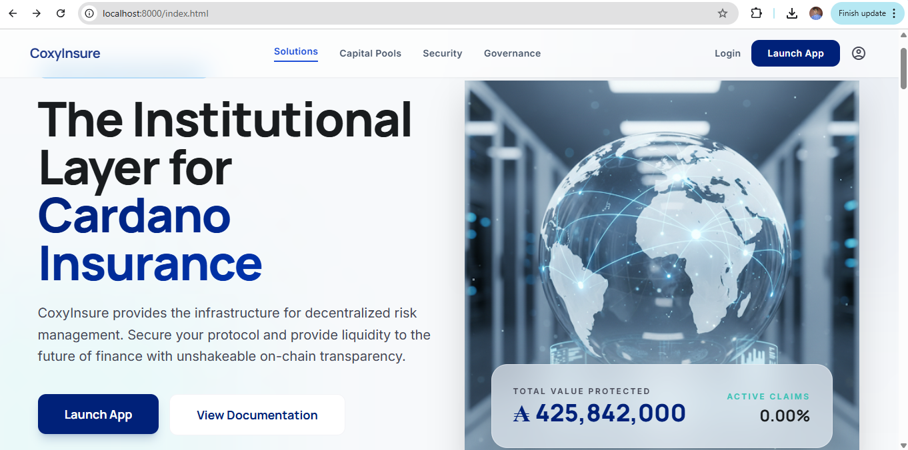

1. Welcome to the CoxyInsure User Manual
CoxyInsure is a Cardano-based DeFi insurance dApp that combines membership identity, capital pooling, cover purchase, claim submission, community voting, and administrator review into one coordinated platform. This manual is meant to help new users enter the system with confidence and help existing users understand the full lifecycle of liquidity provision, policy management, and claims governance.
The guide is arranged in the same order that most users encounter the product: public landing page, wallet connection, membership, pools, buy cover, claims, governance, history, and the admin monitoring layer.
1.1 What This Manual Covers
- how users enter the dApp from the public landing page
- how to connect a supported Cardano wallet and verify the correct account
- how membership controls access to protected protocol actions
- how pool deposits, shares, and withdrawals work
- how to purchase cover and understand active cover records
- how to submit a claim and attach documentation
- how community voting and admin review affect claim outcomes
- how to use history, audit, and admin reporting surfaces
1.2 How to Read This Guide
Start in order if you are new. The chapters are numbered to mirror the normal user journey.
Search if you are returning. The search bar is ideal for finding a single feature quickly.
Use screenshot placeholders. Every major section includes a labelled screenshot placeholder so your team can later replace them with real product captures.
Print individual pages if needed. The print icon at the top right prints the current chapter cleanly.
1.3 Main Product Areas
Public Layer
Landing page, learn more entry point, feature summaries, and onboarding orientation.
User Layer
Wallet connection, membership, pools, cover purchase, claims, governance, and history.
Admin Layer
Dashboard oversight, cover monitoring, claim review, governance execution, and member visibility.
